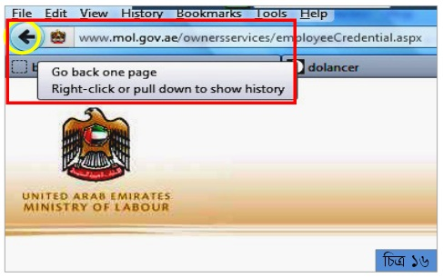

| রাষ্ট্রীয় নাম | : | ইউনাইটেড আরব এমিরেটস |
| স্বাধীনতা | : | ২ ডিসেম্বর, ১৯৭১ |
| সরকার | : | রাজতন্ত্র |
| জনসংখ্যা | : | ২৪ লক্ষ |
| মুদ্রা | : | দিরহাম (১দিরহাম=২২ টাকা প্রায়) |
| আয়তন | : | ৮৩,৬০০ বর্গ কিঃ মিঃ |
| ভাষা | : | আরবী |
| ধর্ম | : | ইসলাম (৯৬%) |
| প্রধান খাদ্য | : | ভাত, রুটি, ডাল, বিরানী, খেজুর |
| ফোন কোড | : | ৯৭১ |
| রাজধানী | : | আবুধাবী |
| উল্লেখযোগ্য শহর | : | দুবাই, শারজাহ |
| উল্লেখযোগ্য শহর | : | দুবাই, শারজাহ |
| বাংলাদেশ থেকে দূরত্ব | : | ৩,৫০০ কিঃ মিঃ |
| বাংলাদেশের সাথে সময়ের পার্থক্য | : | ২ ঘন্টা (-) |
| বাংলাদেশী অভিবাসীর সংখ্যা | : | ১৬ লক্ষ (১৯৭৬-২০০৯) |

দুবাই নগরী
অনলাইনে ভিসা চেক করার জন্য প্রথমে ইন্টারনেট ব্রাউজারে ডাবল ক্লিক করে খুলতে হবে। ইন্টারনেট এক্সপ্লোরার, মজিলা ফায়ারফক্স, অপেরা, গুগল ক্রোম প্রভৃতি যে কোন একটি ব্রাউজার ওপেন করে আপনি ব্রাউজিং করতে পারবেন। মজিলা ফায়ারফক্স ওপেন করলে নিচের মতো একটি উইন্ডো আসবে (চিত্র ১)। ইন্টারনেট এক্সপ্লোরার ওপেন করলেও অনুরুপ একটি উইন্ডো আসবে।
মনেকরি মজিলা ফায়ারফক্স ব্যবহার করে ভিসা চেক করা হবে। মজিলার উইন্ডোর উপরের দিকে এ্যাড্রেস লেখার ঘরটি বেগুনী রঙের বক্স দিয়ে ঘিরে দেখান হয়েছে (চিত্র ২)। ওখানে https://www.mol.gov.ae লিখে কী-বোর্ডে এন্টার বাটনে চাপ দিয়ে (চিত্র-৩) ওয়েবসাইটে (চিত্র-৪) প্রবেশ করুন।
স্ক্রিনের উপরের দিকে মাঝ বরাবর ছোট্ট করে লেখা English এর উপর ক্লিক করলে পরের উইন্ডোটি দেখতে পাবেন (চিত্র ৫)।
এখানে Labour Services এ ক্লিক করলে যে উইন্ডোটি আসবে (চিত্র ৬) সেখানে eServices এ ক্লিক করতে হবে। তাহলে পরের উইন্ডোটি আসবে (চিত্র-৭)।
এখানে eNetwasal Services এ ক্লিক করলে যে উইন্ডোটি আসবে (চিত্র ৮) সেখানে Labour Card Information এ ক্লিক করতে হবে। তাহলে পরের উইন্ডোটি আসবে (চিত্র ৯)।
এখানে জানতে চাইবে Do you have labour card? এখানে জানতে চাইবে Yes আর No। এখানে ঘড় সিলেক্ট করে Next এ ক্লিক করলে পরের উইন্ডোটি আসবে (চিত্র ১০)।
লিখে Next বাটনে ক্লিক করলে কর্মীর যাবতীয় তথ্য পাওয়া যাবে। এভাবে একটি ভিসা কেবলমাত্র একবারই দেখা যায়। একাধিক বার দেখার দরকার হলে বিকল্প পথে চেষ্টা করতে হবে।
হলুদ বৃত্তে ঘেরা তীর চিহ্নের উপর মাউস পয়েন্টার নিলে Go back one page লেখা পপআপ মেনু আসবে (চিত্র ১১)। ঐ তীর চিহ্নের উপর একবার ক্লিক করলে চিত্র ৮ এবং দুইবার ক্লিক করলে চিত্র ৭ এর মতো নিচের উইন্ডো আসবে (চিত্র ১২)। তিনবার ক্লিক
করলে চিত্র ৬ এর অনুরুপ নিচের পেজ আসবে (চিত্র ১৩)। তীর চিহ্নে ৩ বার ক্লিক করে আমরা আসলে ৩ ধাপ পিছনে ফিরে এলাম।

পূর্বে এখানে Labour Card Information এ ক্লিক করা হয়েছিল। এবার তার ঠিক নিচে Contract Information এ ক্লিক করতে হবে। Contract Information এ ক্লিক করলে পরের পৃষ্ঠার মতো একটি উইন্ডো আসবে (চিত্র ১৪)।
আপনার কাছে জানতে চাওয়া হবে Do you have labour card? দুটো অপশন দেয়া থাকে Yes আর No। এখানে No সিলেক্ট করে Next এ ক্লিক করলে পরের উইন্ডোটি আসবে (চিত্র ১৫)। এখানে কর্মীর
লিখতে হবে এবং Next বাটনে ক্লিক করতে হবে (চিত্র ১৫)। তাহলে কর্মীর যাবতীয় তথ্য পাওয়া যাবে।
এভাবে দুইবার দেখার পরও যদি আবার দেখার প্রয়োজন হয় তাহলে উপরের দিকে তীর চিহ্নের উপর মাউস পয়েন্টার নিয়ে ক্লিক করে আগের পেজে গেলে নিচের মতো উইন্ডো আসবে।
তীর চিহ্নে দ্বিতীয় ক্লিকে তার আগের পেজ আসবে (চিত্র ১৭)।
তীর চিহ্নে ৩য় ক্লিকে চিত্র ১৮ এর মতো উইন্ডো আসবে।
Labour Card I Contract Information এর পর এবার Salary Complain এ ক্লিক করুন।
এখানে No সিলেক্ট করে Next এ ক্লিক করলে (চিত্র ১৯) নিচের উইন্ডোটি আসবে (চিত্র ২০)। এখানে কর্মীর -
লিখে Next বাটনে ক্লিক করতে হবে (চিত্র ২০)। তাহলে কর্মীর যাবতীয় তথ্য পাওয়া যাবে। এই অংশটি প্রিন্ট করতে ব্রাউজারের উপরের মেনুবারে ঋরষব এ ক্লিক করুন (চিত্র ২১)।
File এ ক্লিক করলে উপরেরর চিত্রের মতো একটি ড্রপ ডাউন মেনু আসবে (চিত্র ২১)। সেখানে Print এ ক্লিক করলে অথবা কী-বোর্ডে Ctrl+P (চিত্র ২২) একত্রে চাপলে পরের উইন্ডো আসবে।
এখানে প্রিন্টার সিলেক্ট করুন যদি একাধিক প্রিন্টার ইন্সটল করা থাকে। OK বাটনে ক্লিক করে প্রিন্ট করতে পারবেন (চিত্র ২৩)।
আপনার প্রিন্টার না থাকলে পেজটি সেভ করে পরে প্রিন্ট নেয়া যেতে পারে। Save করার জন্য ব্রাউজারের File মেনুতে ক্লিক করে Save Page As ক্লিক করতে হবে (চিত্র ২৪)।
Save Page As এ ক্লিক করলে নিচের মতো একটি উইন্ডো আসবে (চিত্র ২৫)। এখানে তিনটি বিষয় খেয়াল করতে হয়। শেষে Save ক্লিক করে পেজটি সেভ করুন।
সেভ করে রাখা ফাইলটি পেন ড্রাইভে Copy করে অন্যত্র Print করতে পারেন। প্রথমে পেন ড্রাইভটি কম্পিউটারের ইউএসবি পোর্টে লাগিয়ে নিন। যে ফাইলটি কপি করবেন তার উপর মাউসের ডান বাটন ক্লিক করলে যে ড্রপ ডাউন মেনু আসবে। সেখানে Sent To তে মাউস পয়েন্টার নিলে আরেকটি মেনু আসবে (চিত্র ২৬)।

এখানে রিমুভেবল ড্রাইভে ক্লিক করলে ফাইলটি পেন ড্রাইভে কপি হয়ে যাবে (চিত্র ২৭)।